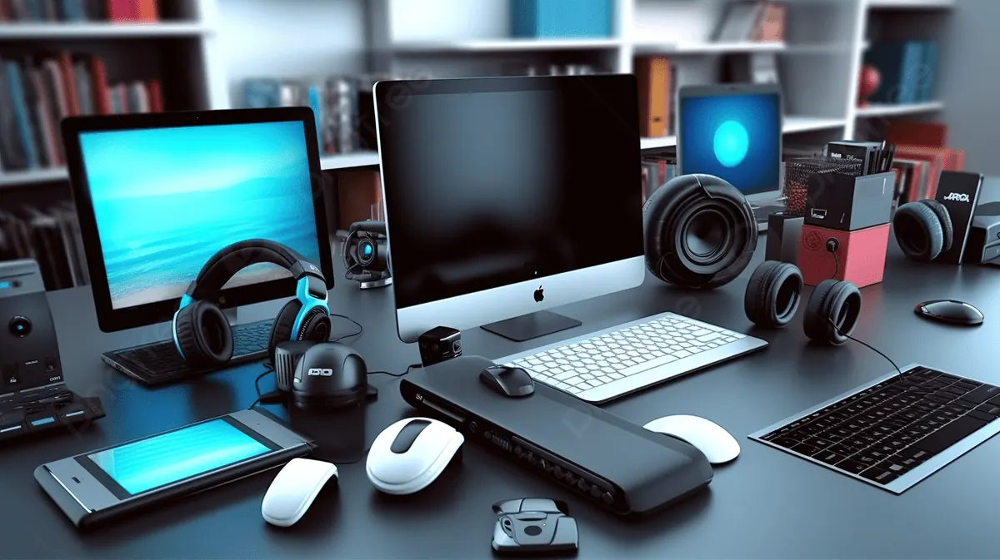
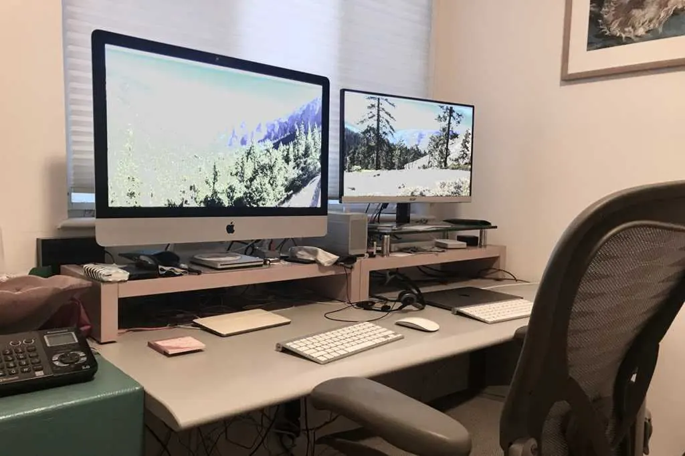

Office & business
Work-from-Home Setup Guide: The Laptop, Printer and Accessories You Need
Plan a practical home office with the right laptop, printer, desk accessories, connectivity and security essentials.
Introduction: Build a Setup Around Your Work
Creating a productive home workspace requires reliable equipment, a comfortable workstation and secure connection to your company systems. Depending on whether you have a video calling focused role, or one that requires you to edit large media, or manage spreadsheets and print customer documents will change what you need.
List out all the tasks you will complete daily and what your employer may require. See what your organisation provides such as a laptop, headset, security software etc. Prioritise your main items to ensure they are reliable and comfortable. Add any extra items once you clearly see a need.

Laptop
Ensure you have a laptop with an updated processor, enough memory, comfortable keyboard, clear screen and SSD storage. This will all depend on what software you are using. For basic office tasks you won’t need such powerful equipment compared to if you were doing software development, design, engineering or video editing. Look at what is recommended for the software you require.
If your laptop doesn’t have enough memory it may cause frustration when working with multiple tasks. A SSD will usually give you faster boot and application times. Consider the size, weight and battery life if you’re moving between rooms or traveling. Ensure you have the correct ports, webcam quality, Wi-Fi, warranty and local support.

External Monitor
Whilst a laptop screen may be sufficient you may benefit from an external monitor. This can make longer working sessions easier. Consider the size and resolution you require depending on your desk space and software. Ensure your laptop can connect to the monitor and required resolution.
Ensure the top of your screen is around eye level or slightly below. You want to ensure you can view the screen comfortably. If using your laptop as a secondary monitor place it on a stand and use an external keyboard and mouse. Ensure you don’t place a monitor where there are windows or overhead lighting causing unwanted glare.
Printer
Having a printer at home can be very useful for printing forms, study materials, invoices, labels and the occasional physical copy. If you need to print a variety of colours consider an inkjet printer. If you need to print a lot of black and white documents consider a laser printer. An all in one printer can also be useful as it can scan and copy.
Look at overall costs. Consider how many pages you can print with the cartridges/toner, how much they cost to replace, duplex printing, setting up Wi-Fi, paper sizes and maintenance advice. If you don’t print often consider how the printer performs if left unused for long periods of time. If you print often consider the recommended monthly print volume and availability of supplies.
Keyboard & Mouse
Using an external keyboard and mouse can help with comfort. Ensure you have a keyboard that you can type easily on and a mouse that fits your hand. A wireless keyboard and mouse will help reduce any cable clutter. Wired versions won’t need charging and can be easy to set up.
Ensure your keyboard is close enough to you so your shoulders aren’t strained and your elbows can sit by your side. Ensure your mouse is the same height as your keyboard. Take short breaks to move and if you are feeling uncomfortable regularly adjust your position. Ensure your accessories are helping you to have a neutral position.
Webcam & Audio
Having a clear webcam and audio can help with remote meetings. Many laptops come with an inbuilt webcam and microphone however if these aren’t great you may want to invest in an external webcam, headset or microphone. A headset can help reduce echo and give you more privacy in a shared home.
Before important meetings ensure your webcam is framed correctly, your microphone isn’t too loud and there is no background noise. Place a light source in front of you, ensure you have a stable internet connection and your webcam lens is clean. Follow any workplace guidelines for the platform you use to make meetings. Don’t record or share any calls without permission.
Internet Connection
To enable video calls, cloud software and remote desktop you’ll need a stable connection. Try to place your router centrally in an open area. If you’re struggling with a weak signal in your workspace consider using a wired connection, compatible mesh system or Wi-Fi extender.
Ensure you have a strong password for your router admin. Use modern Wi-Fi security that your equipment is compatible with. Ensure your router is up to date with firmware. Use your organisation’s approved method of connecting via a VPN or remotely. If you’re regularly losing connection try connecting from a different location or connection. If it seems to be an issue with your service contact your internet provider.
Power & Cables
A reliable power strip or surge protector can help to keep your equipment tidy. Ensure you use trusted brands and follow the load guidelines. Don’t overload your sockets and don’t use more than one extension lead. Ensure your cables are not in the way and not squashed.
Use the charger provided with your laptop or an approved one from the manufacturer. Using the incorrect voltage, connector or power could cause issues with charging. If your battery is bulging or your charger is getting hot stop using it and get help from a qualified person.
Workstation & Chair
Use a sturdy workstation that will give you enough space for your laptop, monitor, keyboard and documents. Ensure your chair is adjusted so your feet are supported and you’re in a comfortable position. If your feet don’t reach the ground consider using an appropriate footrest. Ensure you have easy access to items you use regularly and don’t twist to reach them.
Ensure you have comfortable lighting. Avoid bright glare on your screen. Keep drinks away from your electronics and ensure there is good airflow around your laptop. Keeping your workspace tidy will make it easier to manage and reduce the risk of pulling cables or knocking over devices.
Security
If your employer recommend it use a separate work profile or account. Ensure your operating systems, browsers and security software are up to date. Use unique passwords and multi-factor authentication for your work accounts. Always lock your screen when stepping away from your computer. Especially if you have others in your household.
Only save your work files in approved areas. Follow company guidelines for backing up, cloud and removable drives. Avoid printing any confidential documents. If you do print them ensure you pick them up quickly. Securely dispose of any drafts. Don’t let family members or visitors use your work device unless your organisation allows it.
Small Backup & Supplies Pack
Having a small pack can help avoid any small issues. Depending on your role you may want to include an approved spare charging cable, mouse, headset, notebook, USB adaptor, printer paper and spare cartridge. Only buy supplies once you’ve confirmed they are compatible with your exact model.
Ensure any important personal files are backed up. Follow your employer’s backup process for your work. Occasionally test your backup. Just because you have an external drive doesn’t mean your files can be recovered. Ensure you have your receipts, warranty details and support contacts in a secure place.
Conclusion
Creating a good home working setup will depend on what you need to complete. Choose a suitable laptop. Add any monitors or peripherals to make it more comfortable. Choose a printer based on realistic usage. Having a reliable connection, safe power, comfortable workstation and secure setup is also very important. Focus on the basics first and test your setup whilst working through a normal day. Only upgrade if you really have a limitation..
Need a hand with your printer or laptop?
Printerworld sells printers, laptops and genuine supplies, and repairs and services both. Bring in your model number and we will help you get it right.